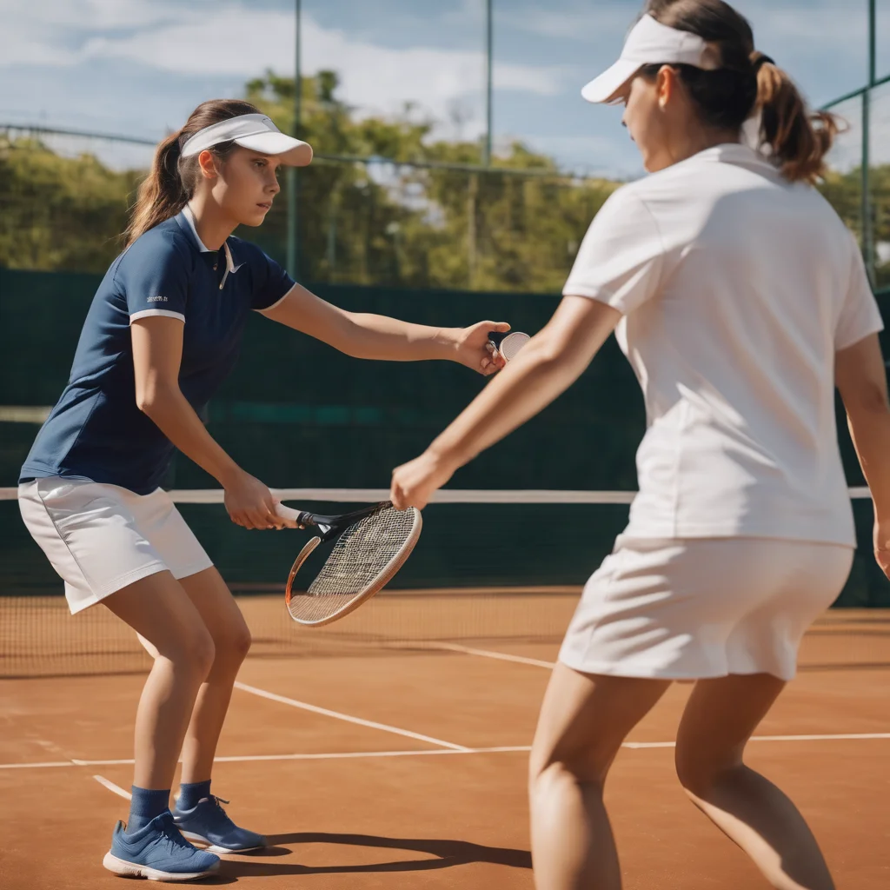

Benvinguts a la nostra lliga de tennis, un esdeveniment anual que reuneix entusiastes del tennis de totes les edats i habilitats.
Des de la seva fundació, la lliga ha crescut en popularitat, atraient participants de tota la regió amb un esperit competitiu però amistós.
Enguany, hem introduït diverses categories noves per assegurar que tots puguin participar, des de principiants fins a veterans.
El tennis no és només un esport, és una comunitat.
Esperem veure't en els nostres propers esdeveniments, tant en la pista com animant des de les grades!
[Barcelona], [25/11/2023] — El passat cap de setmana, la comunitat local de tennis va viure un esdeveniment memorables gràcies a l'esforç i dedicació del conseller d'esports i cultura, qui va organitzar un torneig amistós de tennis que va reunir jugadors de tots els nivells i edats.
L'esdeveniment va tenir lloc en els magnífics terrenys del Club de tenis Bolingas a Barcelona, oferint un ambient perfecte per a una jornada plena d'esportivitat, companyonia i, sobretot, molt de tennis. Des de principiants fins a veterans, cada participant va tenir l'oportunitat de demostrar les seves habilitats i gaudir del joc en un ambient amigable i acollidor.
"El nostre objectiu era crear un esdeveniment on tothom, independentment del seu nivell de joc, pogués sentir-se benvingut i gaudir de l'experiència de competir", va explicar el conseller durant la cerimònia d'obertura. "El tennis és més que un esport; és una forma de connectar persones, i això és el que hem aconseguit avui".
El torneig va ser estructurat en diverses categories, assegurant que tots els participants trobessin el seu espai. Els partits es van disputar en un format que promovia l'esportivitat i el joc just, destacant el valor de la participació per sobre de la competició fèrria. Un dels moments més destacats de l'esdeveniment va ser el partit final de la categoria sènior, on dos dels jugadors més veterans van oferir un espectacle emocionant, demostrant que l'edat és només un número quan es tracta de passió pel tennis.
El torneig va cloure amb una cerimònia d'entrega de premis, on el conseller va agraïr a tots els participants, voluntaris i patrocinadors que van fer possible aquesta jornada inoblidable. "Aquest és només el començament", va anunciar. "Planejem fer d'aquest torneig una tradició anual i continuar creixent, unint a la comunitat a través de l'amor pel tennis."
Amb els participants ja esperant amb entusiasme la propera edició, és clar que el torneig amistós de tennis ha deixat una empremta perdurable en el cor de la comunitat.
- Inscripcions obertes fins al 30 de juny.
- Torneigs per a totes les edats.
- Classes i tallers disponibles.